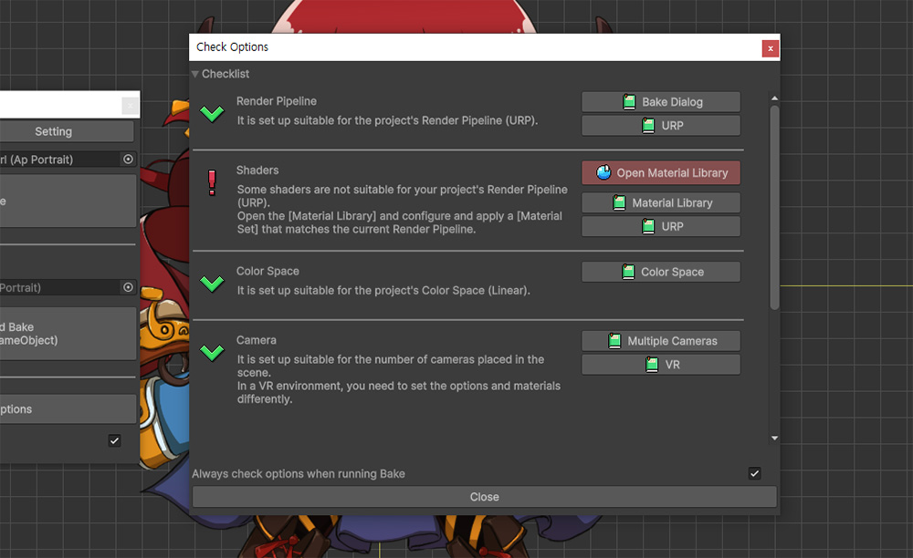

AnyPortrait > マニュアル > Bakeオプションの検証
Bakeオプションの検証
1.6.0
プロジェクトの設定やシーンの状態によっては、「AnyPortrait」が異なる動作をするように設定が必要な場合があります。
特に、レンダリングに関連するオプションをプロジェクトに合わせて適切に設定しなかった場合、キャラクターが正しくレンダリングされない可能性があります。
「Unity」と「AnyPortrait」に慣れていない人にとっては、これらの問題の原因と解決策を見つけるのは簡単ではありません。
ホームページのマニュアルで問題を扱っていますが、マニュアルをいちいち見つけて読むのも簡単なことではないでしょう。
これらの人々のために、「Bake」の時に主に遭遇する問題を簡単に解決する「Bakeオプションの検証」機能が追加されました。
この補助機能が「Unity」と「AnyPortrait」の入門者に役立つことを期待しています。
オプションを確認してすばやく修正

「Bake」オプションに関してユーザーが遭遇する困難の多くは、「レンダリングパイプライン」に関連しています。
「Unity」 最新バージョンでプロジェクトを作成して「AnyPortrait」をインストールした場合は、レンダリングが正しくないデモシーンを見ることができます。
「AnyPortrait」は以前のバージョンの「Unity」でも動作するように開発されたため、基本マテリアルは「Built-In レンダーパイプライン」に合わせて作成されました。
しかし、Unityの最新バージョンでは、デフォルトのレンダリングパイプラインが「URP」に変わり、上記の問題が発生しました。

レンダリング問題に精通している人なら、トラブルシューティング方法を簡単に知ることができます。
しかし、「Unity」や「AnyPortrait」に慣れていない人は、これらの問題を解決するのをやめます。
これらの入門者の時点で問題を経験して解決するプロセスを見てみましょう。
(1) レンダリング問題が発生したと仮定して「AnyPortrait Editor」を開き、「Bake」ボタンを押します。
(2) 「Bakeダイアログ」の「Bake」ボタンを押します。
(3) 一部のオプションが現在のプロジェクト設定やシーン状態に適していないことを知らせるメッセージが表示された場合は、「Fix Issues」ボタンを押します。
上記の警告メッセージは、「Bake」オプションの一部がプロジェクトに適していない場合に表示されます。
このメッセージでは、各ボタンは次の役割を果たします。
- Fix Issues：「Bake」を中止し、「Bakeオプション検証」ダイアログを開いて問題を解決します。
- Ignore and Bake : メッセージの内容を無視し、「Bake」を続けて実行します。
- Cancel：「Bake」を中止します。

「Bake」オプションを検証するダイアログが表示されます。
このダイアログは、主に「レンダリングパイプラインによるBakeオプションとマテリアル」、「カラースペース」、「カメラ」に対して検証します。
そして、各項目に対して有効に設定されている場合は緑色のチェックアイコンを出力し、問題が確認された場合は感嘆符アイコンが表示されます。
問題が発生した場合は、それを解決するボタンが登場します。
また、各項目の説明とマニュアルを開くボタンを通して、問題を理解するのに役立ちます。

現在の項目全体の中で、「Render Pipeline」、「Shaders」、および「Color Space」項目で問題が発生していることがわかります。
テキストの説明を確認すると、どのような問題があるかを正確に知ることができます。
説明に合わせて直接「Bake」オプションを変更することもできますが、このダイアログで素早く問題を解決できます。
(1) 「Render Pipeline」項目では、「URP」に合わせてオプションを変更する必要があることがわかります。 「Fix now」ボタンを押してみましょう。
(2) 「Color Space」項目では、プロジェクトの色空間「Linear Space」に合わせてオプションを変更する必要があることがわかります。同様に「Fix now」ボタンを押してみましょう。

ボタンを押すと、各項目の問題が解決されたことがわかります。
各項目の説明を読んだり、マニュアルを開いて、問題がどのように解決されたかについての詳細な説明を表示できます。
時々、問題は発生しませんでしたが、注意フレーズが出力されることもあります。
たとえば、上記の画面で「Camera」項目の「VR」に関連する追加の説明が追加されていることがわかります。
問題をチェックする機能が限定的にしか動作しない場合や、「VR」などの特殊な状況では、ユーザーが直接確認して解決する必要があります。
そのため、「Fix now」ボタンに加えて、このダイアログが提供する情報を注意深く確認してください。

(1) 特に、「Shaders」項目では「Fix now」ボタンの代わりに「Open Material Library」ボタンが登場します。
(2) このボタンを押すと「マテリアルライブラリ（Material Library）」が起動します。
この問題は「Bake」オプションではなく「マテリアル」に関連しているため、「マテリアルライブラリ」で問題を直接解決する必要があります。
「マテリアルライブラリ」の説明は、関連ページで詳しく確認することができます。

(1) 現在の「Bake」問題が「URP」によって発生したため、「URP」用のマテリアルセットを作成して適用します。
（詳細は「Universal Render Pipeline」で確認できます。）

(1) 「マテリアルライブラリ」と「Bakeオプションの確認」ダイアログを閉じて、もう一度「Bake」ボタンを押します。
「Bake」オプションをすべて適切に変更した場合、以前に出力された警告メッセージは発生せず、「Bake」は正常に実行されます。
(2) 場合によっては、上記のように「Color Space」などに関連する追加メッセージが発生することがあります。内容を確認してボタンを押します。

「Bake」オプションが適切に設定されている場合は、上記のようにキャラクターが正常にレンダリングされることがわかります。
「Bake」ダイアログで開く

オプションに問題がない場合でも、そのダイアログを直接開くことができます。
(1) 「Bake」ダイアログの下部にある「Validate Options」ボタンを押すと、「Bakeオプションの確認」ダイアログが開きます。
(2) また、「Bakeオプションチェック」ダイアログの下部のチェックボックスをオフにすると、「Bake」時にオプションの有効性に関するメッセージが表示されないように設定することもできます。